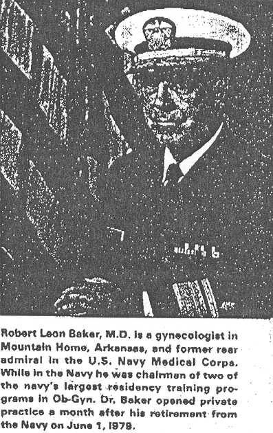

THE CIRCUMCISION REFERENCE LIBRARY
 Circumcision, the most widely performed surgery on males in this country, has the least scientific justification of any surgical procedure. Excepting its use as a religious rite, circumcision is done basically for cosmetic reasons, much like ear piercing in females or for the emotional concerns of parents—reasons that lack scientific validity.
Since parents are the decision-makers for such surgery, I queried each mother who had requested such surgery during one year when I delivered 254 male infants at the Naval Hospital, Camp Lejeune, N.C. Among their reasons for requesting this surgery were religious (although most of the parents were Protestant or Catholic, not Jewish), hospitals and doctors demanding it to prevent masturbation, to improve love life and that "everybody is doing it." No one stated prevention of cervical or penile cancer or problems with infection or retraction of the foreskin, the supposed main medical reasons for such an operation.
The Egyptians practiced circumcision about 2,000 years ago, first for their princes and later for their slaves. Since the beginning of their history the Jews have traditionally circumcised their newborn males as a symbol of their covenant with God.
Circumcision became routine in this country during the late 1940s and early 1950s, but pediatricians are now opposing it. A considerable portion of both the medical and lay literature that has accumulated on circumcision can prove very little, other than that Jewish women are generally less susceptible to cervical cancer, and that in some ethnic groups who practice circumcision, there is a lower incidence of penile cancer.
From what we know today about penile cancer, absence of the prepuce appears to prevent the disease, particularly of the prepuce. But, perhaps the answer lies more in routine cleanliness than surgery. One noted authority, Victor Marshall, M.D., of Cornell Medical Center, has stated that it would require a surgeon to spend his entire professional life doing nothing but circumcision to prevent only a single case of penile cancer.
It is true that Jewish women have 80% less cervical cancer than non-Jews, but Indian Muslim wives of husbands circumcised at puberty do not have less cervical carcinoma than Hindu women whose husbands are not circumcised. Also, Algerian Jewesses have a greater incidence of such cancer than Algerian Muslim and European women. Similar findings, indicating the absences of such a protective effect, have been made elsewhere.
The studies showing such a protective effect are flawed by their heavy dependence on questioning women about their husband's status regarding circumcision. Many women do not have an accurate understanding as to what circumcision is. This is an important consideration, because there are different degrees of circumcision with varying amounts of foreskin left after the operation.
Part of the case presented for circumcision as preventative against cervical carcinoma is that smegma is supposed to be a carcinogen. But studies in animals with human and human and animal smegma have failed to substantiate this. In one study, for example, human smegma (and later horse smegma) failed to induce skin cancer in susceptible strains of mice.
Risks of circumcision are considerable. The newborn's prepuce is normally nonretractable. Complications from forced retraction of the foreskin before the space between it and the glans develops naturally, can be paraphimosis, infection, meatitis, meatal ulcer, and bleeding.
That circumcision is far from benign is indicated by a death rate of infants from one year for this procedure of 16 per 90,000, an incidence of 1:6000 operations. The death rate is considerably lower after one year of age. Death rates in this country have to be estimated, however, because statistics on circumcision are not kept here.
There is considerable hemorrhage in 15% of circumcisions, and in about 2% of newborns, this can be quite serious. It may require transfusion and even be fatal. There is one horror story from Cyprus, where Muslims are circumcised between the ages of four and 13. One operator there circumcised 23 males, of whom 13 got tetanus and five died.
According to Meredith E. Campbell, M.D., tens of thousands of needless early neonatal circumcisions are performed in the United States—an operation which should be considered only if the prepuce is not retractable at age four.
It would appear from statistics that at least 41 children are needlessly sacrificed to prevent one case of penile cancer. If we assume there to be about 1,325,000 newborn male circumcisions in the U.S., the annual cost to the consumers is around $54 million. And at least 229 of these newborns will die as a result of the operation.
If circumcise we must, then let's wait one year, thus lowering the mortality 50%. Better yet, we should wait until there is a definite indication for this procedure, which would be past age three. And let us tell parents that it is not the thing to do unless there is a specific indication.
http://www.cirp.org/library/general/baker1/